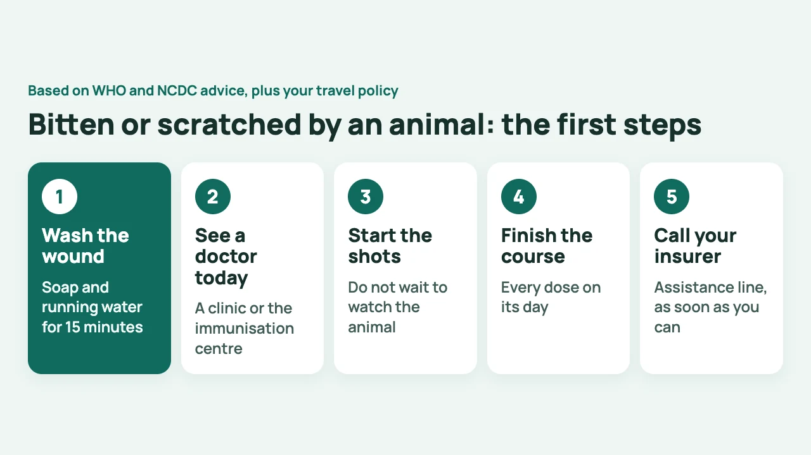
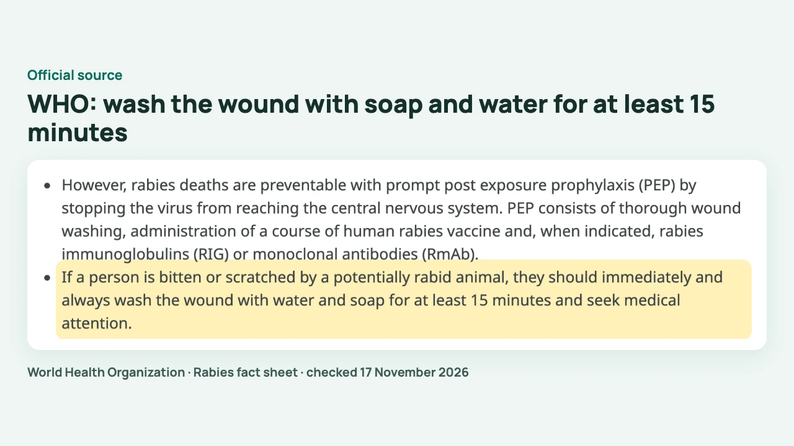
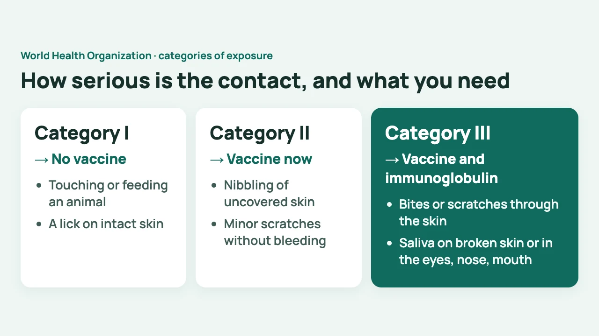
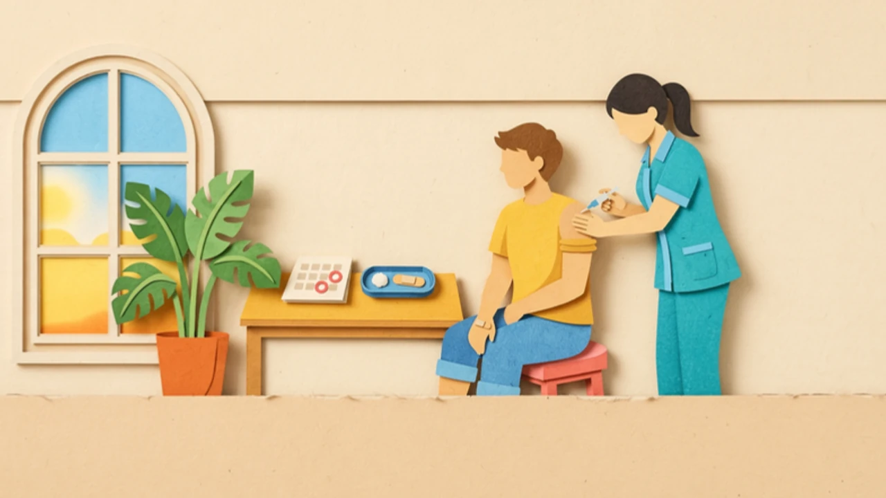

This page is about Georgia the country, not the US state, and is part of our guide to healthcare in Georgia. Checked on 17 November 2026.
What to do after a dog bite or scratch in Georgia

The World Health Organization (WHO) advises you to "wash the wound with water and soap for at least 15 minutes" (fact sheet).
The country's National Center for Disease Control and Public Health (NCDC) agrees and adds iodine or a similar disinfectant (NCDC page, in Georgian). Then:
- Saliva in your eyes, nose or mouth? Rinse with water and see a doctor too.
- Do not wait to see if the animal falls ill: NCDC says treatment must not be delayed to observe it.
- If the animal has an owner, note their contacts and ask if it is vaccinated.
- Heavy bleeding? Call 112 — here is how to call an ambulance.

Do you need a rabies shot after a scratch or a lick?
It depends on the contact; the doctor decides, using three WHO categories:
- Category I: touching, feeding, or a lick on intact skin — no vaccine.
- Category II: a nibble on uncovered skin, or minor scratches without bleeding — wash the wound and start the vaccine at once.
- Category III: bites or scratches through the skin, saliva on broken skin or on the eyes, nose or mouth, or contact with bats — vaccine plus immunoglobulin.

The dog had an ear tag — do you still need to see a doctor?
Yes, the same day. We found no official definition of what an ear tag guarantees, from the National Food Agency (NFA) or the city hall. Whether you need a course depends on the contact, not the tag.
Where to get a rabies vaccine in Tbilisi
After a dog bite in Tbilisi, go to the Immunization Centre, a private company, at 10a Tashkent Street, phone 032 231 22 78. According to its website (in Georgian), emergency anti-rabies and tetanus immunisation is available every day, around the clock; follow-up doses are best done between 9:00 and 18:00.
- A surgeon or rabiologist sees you in person and decides whether you need a course, conditional or full.
- There is no charge for the consultation.
- Cases are not assessed by phone, so come in.
- Bring your passport or another ID document.
We found no official list of clinics in Batumi or other towns. Outside the capital, go to the nearest hospital the same day; for heavy bleeding, dial 112.
How many rabies shots you need: the WHO schedule
Usually three or four visits over one to four weeks; the doctor chooses the schedule. For a first course after category II or III exposure, the WHO position paper of 2018 lists:
| Schedule | Days |
|---|---|
| Intradermal (2 sites) | 0, 3, 7 |
| Intramuscular (1 site), Essen | 0, 3, 7, and one dose between 14 and 28 |
| Intramuscular, Zagreb | 0 (2 sites), 7, 21 |
| US CDC, intramuscular | 0, 3, 7, 14 |
The US row is from the CDC guide to travel medicine; a fifth dose on day 28 is only for a weakened immune system. Clinics in Georgia may follow a different schedule; the NCDC page does not list days.
Had a full course before the trip? You need two doses, on days 0 and 3, and no immunoglobulin; if that course ended less than three months ago, WHO says wound care alone is enough. Pregnancy and infancy are not a reason to refuse treatment, NCDC says. Doses go into the upper arm (the thigh under age two), never the buttock.

When you also need rabies immunoglobulin
Only for category III. It is given once, as early as possible with the first dose and no later than seven days after that first dose, as much as possible into the wound.
If none is available, the vaccine still starts at once: "Vaccines should never be withheld, regardless of the availability of RIG" (2018 position paper).
Who pays for rabies shots in Georgia
The Immunization Centre gives its price by phone and says emergency immunisation is covered by universal and/or private insurance. We found no official confirmation that the state pays for rabies shots for visitors.
Since 1 January 2026, foreigners must enter with health and accident cover of 30,000 GEL, as Georgian law requires (the 2026 entry insurance rule).
A policy covers events during its term, so arrange it before the trip, not after a bite. Still choosing? Here is travel insurance for visitors to Georgia, an IRAO plan. Its policy wording lists "Emergency Vaccination", including the full anti-rabies course, at 100 %, with no deductible and no separate limit within the 30,000 GEL aggregated limit. Routine vaccination is excluded; over 65, 50 % of costs is reimbursed. The Light plan costs from €0.78 (2.22 GEL, ≈ $0.86) a day on a 360-day policy.
Call the IRAO assistance line, +995 32 2 949 949, as soon as you can, ideally before you go to the clinic: under the policy wording, costs incurred without contacting it may not be reimbursed. Paying yourself at a non-partner clinic? Keep Form IV-100a signed and stamped by the clinic, the itemised bill and original receipts; submit them within 30 calendar days.
How much does a rabies shot cost in Tbilisi?
We found no published price. Figures on forums and in AI answers are old or unconfirmed, so ask the clinic before the first dose.
Stray dogs in Tbilisi and across Georgia: how common is rabies?
The disease is present here, mostly in animals. Worldwide, bites and scratches from dogs cause 99 % of human cases (WHO fact sheet).
By 15 April 2026, three laboratory-confirmed animal cases had been recorded nationwide, the NFA said, as reported by JAMnews. One was a stray dog in Bandza, Martvili, that bit several people; another, a fox in Tsalka. Both areas were put under quarantine.

NCDC reported one human case in 2021 (NCDC annual report, 2022); we found no NCDC data for 2022–2026.
Do tourists need a rabies vaccine before travelling to Georgia?
It depends on your trip; decide with a doctor before you go.
The UK travel health service TravelHealthPro says rabies "is considered a risk" in the country and has been reported in domestic animals. It recommends a pre-trip course for people at risk through their work, for trips to areas where treatment is hard to reach, for higher-risk activities such as running or cycling, and for stays longer than a month. NCDC places the country in a high-risk region.
The CDC pre-trip schedule is two doses, on days 0 and 7. It does not replace treatment after exposure.
Frequently asked questions
Is 7 days too late for a rabies vaccine after a bite?
Do not decide on your own that it is too late: see a doctor today, whatever day it is. WHO and NCDC say treatment should start as soon as possible, and the doctor decides on the course.
Can I wait a day after a dog bite?
No. Wash the wound at once and see a doctor the same day: WHO and NCDC say treatment should start immediately.
What is the 10-day rule for dog bites?
You may hear about watching the animal for 10 days, but NCDC says observing it must not delay treatment; the doctor decides on the course.
Is rabies a problem in Georgia?
In animals, yes: the NFA reported three confirmed cases by April 2026, and NCDC places the country in a high-risk region. NCDC reported one human case in 2021.
Do I need a rabies vaccine for Georgia?
Ask a doctor before the trip: TravelHealthPro recommends one for long stays, remote trips, running or cycling, and work-related risk. After a bite, yes, if the doctor prescribes it.
Do tourists pay for rabies shots in Georgia?
We found no official answer. The Immunization Centre quotes its price by phone; the IRAO travel policy lists the full anti-rabies course.
Sources
- World Health Organization: fact sheet
- World Health Organization: position paper on vaccines, 2018 summary (PDF)
- US CDC guide to travel medicine: travel-associated infections
- National Center for Disease Control and Public Health: disease page (local language)
- National Center for Disease Control and Public Health: annual report, 2022 (PDF)
- TravelHealthPro: country page
- Immunization Centre: address and services (local language)
This guide is general information, not medical advice: the doctor decides on your treatment.